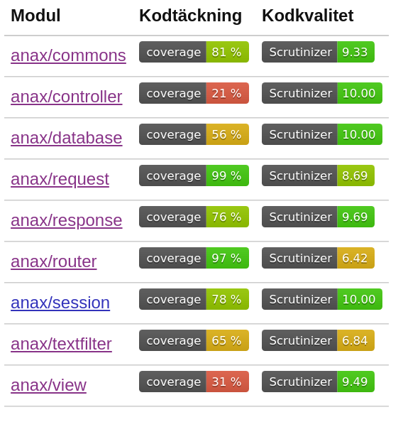

<!doctype html>
<html lang="sv">
<meta charset="utf-8" />
<title>DI | ramverk1</title>

<!-- Mithril HTML Slideshow styles -->
<link href="css/mithril-slideshow.css" rel="stylesheet" />

<!-- Code formatting using highlight.js -->
<link rel="stylesheet" href="css/default.css">
<link rel="stylesheet" href="css/tomorrow.css">
<script src="js/highlight.pack.js"></script>

<!-- Text formatting using Markdown through showdown.js -->
<script src="js/showdown.min.js"></script>


<script data-role="slide" data-markdown type="text/html">
# ramverk1
## Dependency Injection (DI)
### Mikael Roos
</script>


<script data-role="slide" data-markdown type="text/html">
# Agenda

* Förra veckan
* $di
* Uppgiften

</script>


<script data-role="slide" data-markdown type="text/html">
# Minns förra veckan

* MVC
* Solid
* Cohesion / Coupling

</script>


<script data-role="slide" data-markdown type="text/html">
# MVC

* Model View Controller
* Tunna kontrollers
* Dumma vyer
* En modellklass är "bara ytterligare en klass"
* "Vem pratar med vem?"
* Minns att det finns olika sätt att se på detta designmönster, beroende av sammanhanget.

</script>


<script data-role="slide" data-markdown type="text/html">
# SOLID

* Single responsibility
* Open/Closed
* Liskov substitution
* Interface segregation
* Dependency inversion

</script>


<script data-role="slide" data-markdown type="text/html">
# SOLID...

* S "A class should have only a single responsibility"
* O "open for extension, closed for modification"
* L "replaceable with instances of their subtypes"
* I "many client-specific, no general-purpose (interface)"
* D "depend upon abstractions, not concretions."

</script>


<script data-role="slide" data-markdown type="text/html">
# Coupling / Cohesion

> "Low coupling is often a sign of a well-structured computer system and a good design, and when combined with high cohesion, supports the general goals of high readability and maintainability."

</script>


<script data-role="slide" data-markdown type="text/html">
# Enhetstester

* Små tydliga testmetoder
* Små rena och tydliga klasser
    * Skapa många små testklasser
    * Positiva och negativa tester
* 100% kodtäckning fullt rimligt
* Asserts för att verifiera

</script>


<script data-role="slide" data-markdown type="text/html">
# Kodkvalitet

* Software metrics
* Kan man bedöma kodens kvalitet?

</script>


<script data-role="slide" data-markdown type="text/html">

</script>


<script data-role="slide" data-markdown type="text/html">
# Kodkvalitet...

* Titta på modul med låg (?) kvalitet
* make test (phpmd)
* Studera phploc

</script>


<script data-role="slide" data-markdown type="text/html">
# Komplex kod?

* Antal metoder, publika/privata
* Antal kodrader per metod, klass
* Beroenden till andra klasser
* Cyclomatisk complexitet

</script>


<script data-role="slide" data-markdown type="text/html">
# Kodkvalitet...

* Peek inför kmom05 CI

</script>


<script data-role="slide" data-markdown type="text/html">
# Dependency injection
</script>


<script data-role="slide" data-markdown type="text/html">
# RTFM om $di

* Symfony
* Laravel
* Phalcon
* Yii

</script>


<script data-role="slide" data-markdown type="text/html">
# Om $di

* Inject dependencies, dependency injection

</script>


<script data-role="slide" data-markdown type="text/html">
# Dependency injection

* "A technique whereby one object supplies the dependencies of another object".

</script>


<script data-role="slide" data-markdown type="text/html">
# DI förklarat

* A dependency is an object that can be used (a service).
* An injection is the passing of a dependency to a dependent object (a client) that would use it.
* The service is made part of the client's state.

</script>


<script data-role="slide" data-markdown type="text/html">
# Typer av DI

* Constructor
* Setter-metod

* Interface injection

</script>


<script data-role="slide" data-markdown type="text/html">
# Studera injection i controller

* Se anax/controller (injectable, uses interface, implements trait)
* Se anax/common (interface, trait)
* Se anax/url (config/di)

</script>


<script data-role="slide" data-markdown type="text/html">
# Relaterat $di

* Inversion of control
* Service locator
* Service container
* Lazy loading

</script>


<script data-role="slide" data-markdown type="text/html">
# Inversion of control

* Grundkonceptet i ett ramverk.
* Vem har kontrollen?
* Vem anropar vem?
* "Don't call us, we call you."

</script>


<script data-role="slide" data-markdown type="text/html">
# Service locator

* Designmönster
* Ett centralt register.
* Plats där tjänster/objekt kan hämtas.

<!--
    * Jämför med designmönster Registry.
-->

</script>


<script data-role="slide" data-markdown type="text/html">
# Service container

* $di är en container som innehåller ramverkets tjänster.
* Erbjuder access till alla ramverkets tjänster.

</script>


<script data-role="slide" data-markdown type="text/html">
# Lazy loading

* En tjänst kan laddas.
* En tjänst kan aktiveras.
* En tjänst som är laddad är inte aktiverad.
* Konsumerar inte minne, processingtid, om det inte behövs.

</script>


<script data-role="slide" data-markdown type="text/html">
# Service container slentrian

* [Microsoft/vscode-python#1999](https://github.com/Microsoft/vscode-python/issues/1999)
* Injecta bara det som behövs

</script>


<script data-role="slide" data-markdown type="text/html">
# Summera DI

* Vi har en (global) service container $di där ramverkets tjänster är lazy loaded och tillgängliga.

</script>


<script data-role="slide" data-markdown type="text/html">
# PHP-FIG

* [PSR-11: Container interface](https://www.php-fig.org/psr/psr-11/)

</script>


<script data-role="slide" data-markdown type="text/html">
# Hur implementerat i Anax?

* Kolla koden anax/di

</script>


<script data-role="slide" data-markdown type="text/html">
# Uppgift kmom03

* Make an application that allows the user to view the observed (in the past 30 days) or forecasted (in the future) daily weather conditions for a given location
* OpenWeather API
* Send multiple requests concurrently
* Använd $di.

</script>


<script data-role="slide" data-markdown type="text/html">
# Uppgift kmom04

* Paketera egen modul till GitHub.
* Publicera på Packagist.
* Installera med composer.
* Saker att tänka på?

</script>


<script data-role="slide" data-markdown type="text/html">
# Uppgift kmom05

* Bygg egen CI kedja för modulen.

</script>


<script data-role="slide" data-markdown type="text/html">
# Avslutningsvis

* Frågor på det?

</script>


<script data-role="slide" data-markdown type="text/html">
</script>


<script data-role="slide" data-markdown type="text/html">
# Mer om pattern

* Exempel på pattern, "[Patterns of Enterprise Application Architecture (P of EAA)](https://martinfowler.com/eaaCatalog/index.html)".
* Studera designmönster för att bli en bättre programmerare.

</script>


<script data-role="slide" data-markdown type="text/html">
# Proxy

* Låt oss prata lite designmönster...
* [anax/proxy](https://github.com/canax/proxy)
* Ett alternativ till att nå ramverkets tjänster
* (Diskussion om [Laravel Facade versus Proxy](https://stackoverflow.com/questions/17332322/does-facade-in-laravel-implements-facade-or-proxy-pattern))

</script>


<script data-role="slide" data-markdown type="text/html">
# Tips

* Wrappa cURL i en egen klass.
* Separera i flera modell-klasser.
* Injecta de ramverkstjänster som behövs från kontroller-lagret.
* Lagra konfiguration i `config/`.
* Läs config-filer med $di->get("configuration");
* Separata vyer.

</script>


<script data-role="slide" data-markdown type="text/html">
# Tips...

* Om [API dokumentation](https://rem.dbwebb.se).
* Känner du behovet av att logga saker till fil?
* Känner du behovet av att cacha svar från externa tjänster?

</script>


<!-- include essential js-script -->
<script src="js/mithril.min.js"></script>
<script src="js/mithril-slideshow.js"></script>
